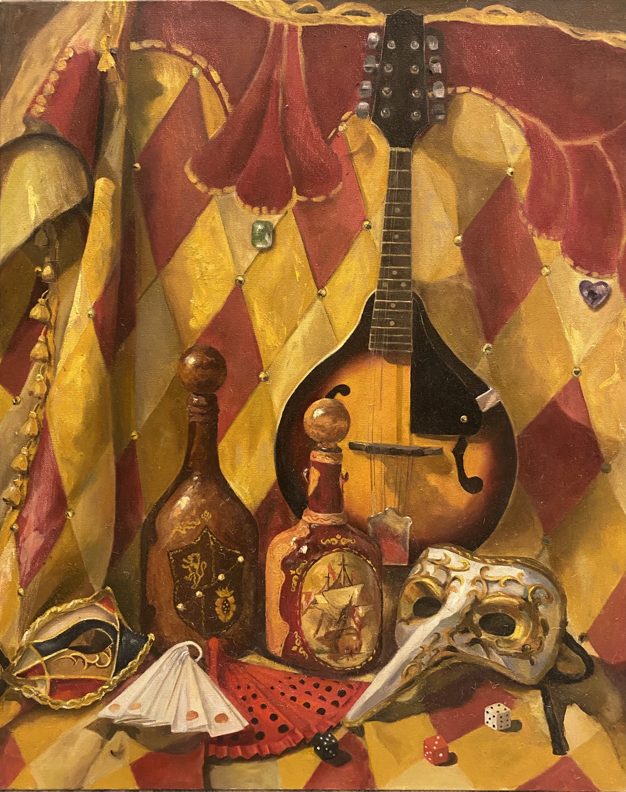
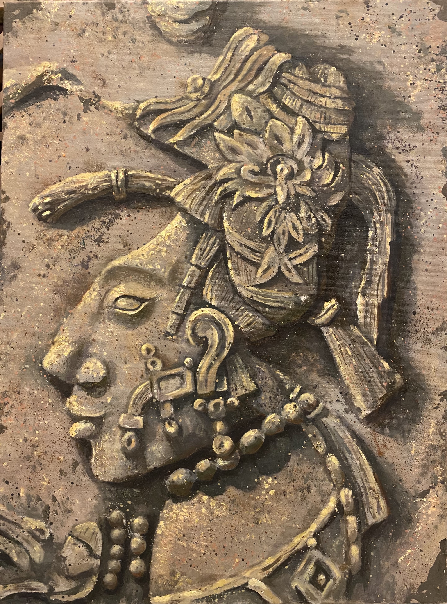
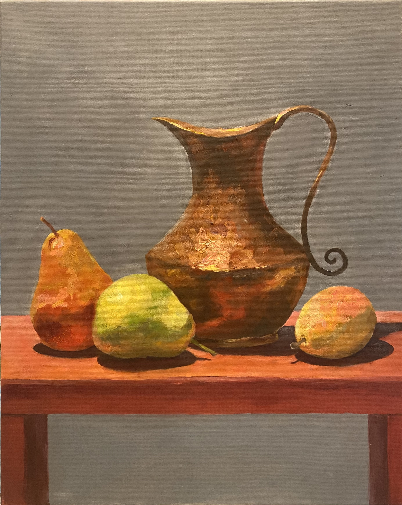

My work

Protein Journal Cover Art
I chose to create a cover art theme reminiscent of "Where's Waldo?" because it offers a playful yet effective way to engage viewers while conveying complex scientific ideas. Show more

Plant Immunity Journal Cover Art
This cover art draws inspiration from the design of a playing card, particularly the Queen card, where the image is mirrored so it can be seen from both sides. Show more

For the People
This painting, styled like a communist propaganda poster, explores bravery, perception, and societal influence. Show more

Dance of Mascarades
This still life oil painting is a visual narrative inspired by the vibrant atmosphere of a masquerade ball. Show more

Stare
This colored pencil artwork juxtaposes a hyper- realistic eye with a surreal landscape, framed within a dark background resembling a chalkboard. Show more

Mayan Sculpture
This oil painting captures the details of a Mayan sculpture of a woman. Show more

Still Life
This painting is a still life composition featuring a copper pitcher and three pieces of fruit on a wooden table. Show more

Duck Composition
This is an oil painting that captures my appreciation for ducks and their natural habitats. The scene depicts a Hooded Merganser nesting among reeds and marsh grasses, with two eggs visible. Show more
Copyright © Alison. Made with <3